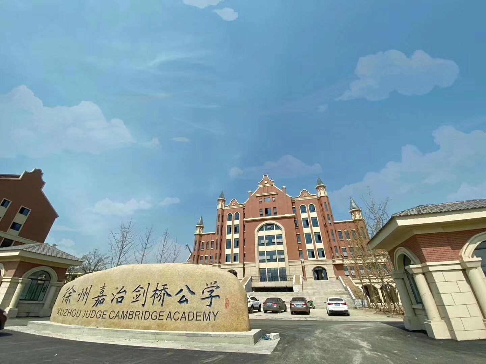

<main class="page-main">
  <div class="container">
    <header class="page-header">
      <p class="card-location">Jiangsu, China</p>
      <h1>Xuzhou Judge Cambridge Academy</h1>
      <p class="page-intro"><!-- YOUR INTRO TEXT --></p>
    </header>

    <section class="content-section">
      <div class="school-content">
        <div class="school-image">
          
        </div>
        
        <div class="school-text">
          <p>Inspired by an initiative of Sir Paul Judge, Xuzhou Judge Cambridge Academy opened to Grades 1–7 in September 2018 in one of China's most historic cities, once the capital of the Han Empire.</p>
          
          <p>The school moved into its permanent buildings in October 2019.</p>
          
          <p>XIA offers the Chinese National Curriculum with strong additional English bilingual elements in Grades 1–9. The High School offers IGCSEs and A Levels.</p>
          
          <p>John Puddefoot served as Honorary Principal from 2017 to 2020, working on curriculum frameworks and quality standards.</p>
        </div>
    </section>

    <section class="content-section">
      <a href="portfolio.html" class="btn">← Back to Portfolio</a>
    </section>
  </div>
</main>
